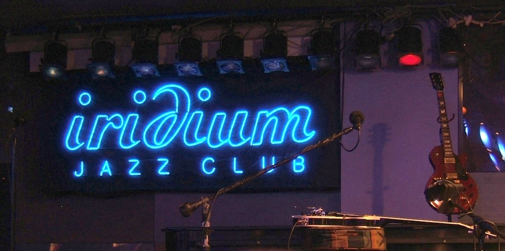

The band: Toronto's sharpest suits
Platinum Blonde formed in the early 80s on Toronto's Queen Street West circuit, where Holmes shaped a band around style as seriously as sound. The bleach-and-suits image got them noticed; the songs kept them. The 1983 debut Standing in the Dark made them instant Canadian stars: the title track, “It Doesn't Really Matter,” “Not in Love” — radio records with genuine new-wave teeth, produced with a sheen that made MuchMusic rotation inevitable. For about four years, Platinum Blonde was arguably the biggest rock band in Canada, headlining arenas while critics debated whether the gloss eclipsed the substance.
The song: cool as a weapon
“Doesn’t Really Matter” — often listed as “It Doesn't Really Matter” — is the band's calling card: Galli's chiming, effects-laden guitar over a rigid rhythm section, and Holmes delivering detachment as charisma. The lyric plays romantic indifference as pop theater, and the performance sells every ounce of it. On MuchMusic, where the band's videos ran relentlessly, the song fused with the image: Platinum Blonde understood the 80s equation that style is sound when the camera is the radio.
The after
The follow-up Alien Shores (1985) broadened the palette — the ballad “Crying Over You” hit #1 in Canada, and “Situation Critical” kept the momentum — but the band's moment was brief by design of the era: image-heavy acts burned fast. By the early 90s Platinum Blonde had dissolved, leaving behind a run of singles that still anchor 80s Canadian playlists. Holmes became a Toronto institution anyway — founding and still running the legendary Mod Club — while reunion shows proved the catalog's durability. “Doesn’t Really Matter” endures as the sound of Canadian new wave at its most confident: dressed up, turned up, and utterly sure the future was local.

Frequently asked questions
Who were Platinum Blonde?
A Toronto new wave band fronted by Mark Holmes, huge in Canada in the mid-80s with Standing in the Dark and Alien Shores.
What was Platinum Blonde’s biggest hit?
In Canada, “Crying Over You” hit #1; “Doesn’t Really Matter” and “Standing in the Dark” are the signature new-wave staples.
What happened to Platinum Blonde?
They dissolved in the early 90s; Mark Holmes founded Toronto's Mod Club, and the band has reunited periodically to play the hits.